1. 结论：从哪里入手
先做三件事，同时开工：
- 约九安开一次对接会，把四项前置定下来（第 4 节阶段
0）。这四项不定，补丁定不了稿，Agent 也不知道发布到哪里：
- 设计稿 v2 批准；
- 九安真实代码线上的相关文件（补丁基线）；
- 生产用哪一套 Nexus，以及单据数据能不能发出去；
- Agent 接入框架第 10 节要九安拍板的 8 件事。
- 你批准设计稿之后，我这边马上开工第二份计划：在测试台上写补丁 0001–0006 和部署工具包（第 5 节），让初审 MVP 跑通（第 4 节阶段 1）。其中 0001–0003 是通用层，不依赖九安的决定，可以先写。
- 选定生产用的 Nexus 环境，在上面建审核
Agent（
first_review@1）的发布。
先说清楚一件事：客户那边部署的不是我们的 PoC
服务器，而是九安自己的系统，打上我们的补丁，再连到
Nexus 上的
Agent。我们的测试台（andon-finance.tinyboat.blog）一直留在我们这边，只用来验收补丁，只放虚构数据。所以
PoC 测试台自己的那些上生产前事项（源站明文 HTTP、deploy.sh
的回滚缺口等，交接文档第 6.1 节第
1、2、10、11
条）不挡客户部署；前提是测试台上永远不放真实单据。
部署方式（2026-10-19 定）：九安拿到补丁和代码后，在自己的环境里自己适配；部署由我们用代码协助完成。我们交付一套部署工具包（第 5 节），接进九安现有的 Gitea Actions + Docker Compose 流水线。九安的人或他们的编码工具运行它，就能完成打补丁、测试、部署、检查，不靠手工步骤。只有一步必须人手做：发布者本人在 Nexus 网页上签发调用密钥。

2. 现在在哪（v0.1.0）
| 部分 | 状态 | 离客户部署还差什么 |
|---|---|---|
| 测试台（九安开发包副本 + 九安真实运行时 + 本机 MySQL） | 已就绪，端到端测试可以跑 | 不用再动；用来验收补丁 |
Agent
接入框架（jiuan.、first_、contract/） |
设计稿 v2，待批准 | 批准 |
| 九安补丁 0001–0006 | 没开始 | 第二份计划 |
审核 Agent 的 first_ |
没开始 | 新提示词与发布，和补丁 0005 一起 |
| 现在审批流用的「九安审核AI」 | 可用（前提：至少一个账号在「我的 Agent」里启用了它）；偶发输出不合法 JSON 的问题已在请求里加输出规则处理（交接文档第 6 节第 12 条） | 新提示词里把输出规则固定下来 |
| 「我的 Nexus」（每个账号连接自己的 Nexus） | PoC 里可用 | 九安第三期再做，不在这次部署里 |
| 两个 Skill（nexus-ai-operator、agent-access） | 可用，见 Skills 配置指南 | 九安开发者按指南装好就能用 |
3. 「整体部署」要部署哪三块
| 块 | 部署什么 | 谁做 | 在哪 |
|---|---|---|---|
| Nexus 侧 | 审核 Agent（提示词、模型）、A2A 发布（名片里写契约和任务）、调用密钥 | Agent 开发用 nexus-ai-operator；调用密钥由发布者本人在网页签发 | 生产用的那套 Nexus（第 4 节阶段 0 定） |
| 九安侧 | 补丁 0001–0006 打进九安真实代码线；「Agent 接入」里启用发布、粘贴调用密钥；路由表；规则发布；任务开关 | 九安适配、评审、合入；我们交付补丁和部署工具包，用代码协助部署 | 九安的测试环境 → 生产环境 |
| 运维侧 | 九安到 Nexus 的出站网络与 TLS；调用额度；日志与告警；密钥保管；回退办法 | 九安运维 + Nexus 运维；我们给清单 | 两边 |
4. 分阶段怎么走
阶段 0：对接与拍板
进入阶段 1 的门槛：下面「前置」四项都有结论。
| # | 要定的事 | 为什么挡路 | 谁定 |
|---|---|---|---|
| 前置 1 | 设计稿 v2 批准（框架、接口、初审契约） | 补丁按它写 | 项目负责人；九安评审 |
| 前置 2 | 九安真实代码线上的相关文件：start-、analysis-、public/、providers/、src/
下的连接器、调用中间件、流水线 |
我们手上的开发包是裁剪过的测试环境副本，补丁要在真实代码线上重新生成一次才能定稿 | 九安 |
| 前置 3 | 生产用哪一套 Nexus：已定，用另外一套已经建成的线上
Nexus AI（https://d3u3hj2us186y.cloudfront.net/）；我们的测试台仍连
nxs- |
决定 Agent 发布到哪里、名片地址、网络怎么通 | 项目负责人 + 九安 |
| 前置 4 | 数据外发：单据事实（金额、公司、费用说明、附件内容）要发到 Nexus
和它后面的模型；九安的数据治理（ai-）和客户的合规要同意 |
不同意就不能接真实单据 | 九安 + 客户合规 |
同时要九安拍板、但可以在阶段 1 期间定的（框架第 10 节）：
- 系统身份
system:pipeline（安全相关）； - 额度：
ai-model每天 150 次、并发 2，每张单据至少一次调用； - 人工复核只记在九安里，不回写汇联易；
- 什么时候打开任务开关：九安现在有意下线了 AI 功能；
- 调度；
- 连接器密钥改成来自「Agent 接入」（安全相关）；
- 租户级调用：这次的 MVP 用不到。
阶段 1：测试台上跑通 MVP（第二份计划，我们做）
进入阶段 2 的门槛：框架第 11 节的验收全部通过，端到端测试通过，你确认。
- 写实现计划，按顺序交付：
- 0001 契约与 A2A 适配层；
- 0002 模型接入口与「Agent 接入」；
- 0003 Agent 任务服务（MVP 只做一问一答、按单据存结果、按单据类型路由）；
- 0004 规则生效；
- 0005 初审与审批流；
- 0006 界面。
- 在 Nexus 上建审核 Agent 的
first_review@1提示词与发布。字符串里不用英文双引号，修掉现在的偶发问题。 - 补丁放进
patches/jiuan-v0.5.3/，build-jiuan.sh打进副本，deploy.sh部署到测试台。 - 部署工具包（第 5 节）和补丁一起写，先在我们的测试台上用它走一遍：打补丁、测试、检查、Nexus 侧配方、启用、验收测试。
- 端到端测试覆盖这几种情况：
- 来单自动初审；
- 失败自动重试一次；
- 单据改版开新一轮；
- 规则发布后标「规则已更新」；
- 两个人同时操作，后到的回 409。
阶段 2：九安测试环境（九安适配，我们用代码协助部署）
进入阶段 3 的门槛：九安评审过补丁（两处安全相关的改动单独评审），九安测试环境上的部署检查和验收测试都通过。
- 定稿：在九安真实代码线（前置 2）上用
apply-patches.sh试打补丁，打不上的地方改好，补丁定稿。适配层和契约同时作为独立目录交付，九安以后升级时直接换文件。 - 九安适配：九安在自己的分支上运行工具包，按自己的环境和习惯改，比如界面、配置方式。契约测试和适配层测试加进九安的 CI，改坏了接口当场就报。
- 部署：我们协助九安，用他们现有的 Gitea Actions +
Docker Compose 流水线（
deploy/gitea/）部署到测试环境（MySQL 8.0）。流水线不用加新密钥：调用密钥存在「Agent 接入」的启用记录里，用九安已有的数据密钥加密。部署后自动跑部署检查。 - 配置：
- 管理员在「Agent 接入」里填发布编号、粘贴调用密钥（发布者本人在 Nexus 网页签发），也可以用启用脚本，密钥只经标准输入。九安当场验证名片和密钥；
- 填好路由表（单据类型 → 发布）；
- 复核人发布规则。
- 接上汇联易测试租户的真实同步。凭据由九安放进自己的密钥源，我们不经手。
- 对九安测试环境跑验收测试。
- 九安开发者需要时，按 Skills 配置指南装两个 Skill，自己调试 Agent。
阶段 3：试运行
进入阶段 4 的门槛：试运行指标达标、九安签字。
- 九安打开任务开关，先限定一两家公司、一种单据类型；
- 盯这几项指标：
- 每天的调用量和额度；
- 初审失败率（
AI_*错误码）； - 单次时长（v0.5.3 测试台上是 40–100 秒，带附件的更慢；v0.7.10 测试台的审核 Agent 带知识库查询，2026-11-01 改过提示词后 7–20 秒）；
- 复核人推翻初审的比例；
- 调用密钥失效、Nexus 不通要能告警，不能只靠健康检查。
阶段 4：生产上线
- 生产 Nexus 加固：TLS、关掉多余的入口、发布固定版本。
- 密钥与凭证：生产用的调用密钥单独签发、单独保管；开发测试期间用过的凭证在这一步统一清理（交接文档第 2.5 节）。
- 回退办法：关掉任务开关就回到纯人工复核，业务不受影响。上线前演练一次。
- 上线后：财务类、知识库类任务和网关层（多轮对话、长任务、租户级调用）按Agent 接入框架第 0 节的「以后」排期。
5. 我们交付的部署代码（部署工具包）
和补丁一起在第二份计划里做，先在我们的测试台上用一遍，再交给九安。
| 组件 | 做什么 | 接到九安哪里 |
|---|---|---|
| 补丁与独立目录 | 补丁 0001–0006，加上独立目录（A2A
适配层、契约与任务检查代码）。apply-
先用 -
试打，打不上就列出冲突的文件和位置，不留半成品 |
九安在自己的分支上运行 |
| 测试 | 契约测试、适配层测试（本地假 A2A 网关，不连 Nexus、不花钱）、九安侧的单元测试 | 加进九安 CI 的测试步骤 |
部署检查
check- |
照九安自己的
scripts/
的写法，检查这几项，都不花钱：Nexus 通不通；名片里有没有契约和任务；调用密钥有效（ tasks/）；路由表指向的发布都已启用；任务开关和数据治理变量（AI_、AI_）是什么状态 |
部署后自动跑，不通过就报失败 |
| 配置即代码 | 每个环境一份：路由表（单据类型 → 发布）、任务开关、额度、数据治理变量 | 走九安现有的 Actions Variables，不加新密钥 |
| Nexus 侧即代码 | 审核 Agent 的提示词文件，加一个 operator 配方脚本：建或更新 Agent、建 A2A 发布、写名片描述（契约与任务）、固定版本；先只读预览，确认后执行 | 在维护人的编码工具里运行（nexus-ai-operator） |
| 启用脚本 | 把调用密钥经标准输入交给九安的「Agent 接入」接口，当场验证 | 管理员运行，或者在页面上粘贴 |
| 验收测试 | 端到端冒烟：站点地址、账号、公司都参数化；先在我们测试台上跑通，再对九安测试环境跑 | 九安测试环境部署后跑一次 |
| 给编码工具的说明 | AGENTS.：哪些文件按契约不能改，哪些可以按九安的习惯改，改完必须跑哪些测试 |
放进独立目录；九安开发者用 Claude Code、Codex 适配时直接读它 |
6. 第一周做什么
| # | 事 | 谁 |
|---|---|---|
| 1 | 读Agent 接入框架总览，批准设计稿 v2，或者提修改 | 你 |
| 2 | 约九安对接会，带上：一页总览、本文第 4 节阶段 0 的表、第 7 节的资料清单 | 你 |
| 3 | 生产用线上 Nexus AI（https://d3u3hj2us186y.cloudfront.net/，已定）：在上面建审核 Agent 的发布 | 我们 |
| 4 | 设计批准后写第二份计划：补丁 0001–0006 加部署工具包（第 5 节），从 0001 开工 | 我 |
| 5 | 请九安给补丁基线文件和测试环境的部署方式 | 九安 |
7. 要九安和客户提供的
| 东西 | 用途 | 什么时候要 |
|---|---|---|
| 真实代码线上的相关文件（第 4 节前置 2） | 补丁定稿 | 阶段 1 结束前 |
| 测试环境的部署方式、反向代理配置、出站到 Nexus 的网络 | 阶段 2 部署 | 阶段 2 开始前 |
| 数据外发与模型使用的书面同意 | 接真实单据 | 阶段 2 开始前 |
| 汇联易测试租户的凭据（九安自己保管） | 真实同步 | 阶段 2 |
| 预计的单据量（每天多少张、高峰多少） | 额度和并发的规划 | 阶段 2 |
| 试运行的范围（哪几家公司、哪类单据）和验收人 | 阶段 3 | 阶段 2 结束前 |
| 客户规则的样例（几条真实规则） | 规则生效和初审效果的验证 | 阶段 1 中 |
8. 风险
| 风险 | 后果 | 对策 |
|---|---|---|
| 开发包是裁剪过的，和真实代码线不一致 | 补丁打不上，或者打上了运行才出错 | 尽早拿基线（前置 2）；适配层和契约做成独立目录，少依赖九安内部名字 |
| 九安适配时改到了契约 | Agent 收到的请求或九安读到的结果对不上 | 契约测试加进九安 CI；AGENTS. 写明哪些不能改 |
| 九安有意下线了 AI 功能 | 补丁做好了也不开 | 阶段 0 就问清楚开关的时间和条件 |
| 额度：每天 150 次、并发 2 | 单据多时排队、超额 | 按单据量估算，阶段 2 前改中间件按任务分额度 |
| 数据外发不被批准 | 不能接真实单据 | 前置 4 先定；必要时用九安自建的 Nexus 和模型 |
| Agent 输出偶尔不合规 | 单次初审失败 | 九安校验兜底、自动重试一次、提示词约束；失败率进试运行指标 |
| Nexus 没有推送，任务只在内存里存 24 小时 | 长任务不可靠 | MVP 只做一问一答（单次不超过 5 分钟）；长任务等网关层 |
| 系统身份、连接器密钥是安全相关的改动 | 九安安全评审不通过 | 改动收窄（只读、只用于登记过的任务、只限配置里的公司），单独评审 |
九安契约里 review_ 的时限是 120
秒，带知识库查询的真实审核一轮要 15–120 秒（v0.7.10
测试台，2026-11-01） |
一轮超时，出不来 AI 建议 | 阶段 2 前请九安在契约里调高：测试台用 180 秒（补丁
0006），调用中间件给 nexus- 的时限要比它长（测试台
200 秒，补丁 0007）。提示词里写死查询次数 |
| 知识库的内容和审核 Agent 的提示词对不上：测试台把知识库换成审批风险判断卡后，提示词仍要审批路径和最终审批人，Agent 一轮查 11–16 次去找库里没有的东西 | 一轮从十几秒拖到超时 | 换知识库内容时同时核对、改提示词，跑端到端测试再上线；提示词不要求库里没有的事实，关键词对上库里的行是按什么编的（开发者快速对接指南第 5.1 节） |
9. 已经回答的问题
2026-10-20 的回答：
- 生产用哪套 Nexus：另外一套，已经建成：线上 Nexus AI https://d3u3hj2us186y.cloudfront.net/。
- 第一批上线范围和时间窗：没有固定的。
- 九安的生产环境也用这套 Gitea + Compose 流水线吗：大概率是，部署工具包先按这一套做。
- 要不要在我们的测试台上演练九安的部署方式：现在不需要，以后需要时再做。
部署由谁做已经定了：九安自己适配，我们用代码协助部署（第 1 节）。